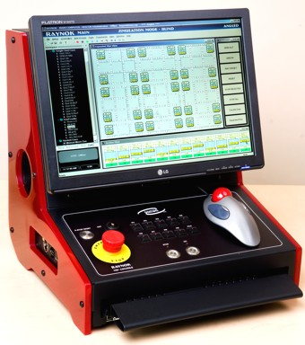
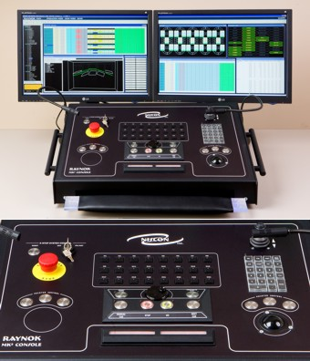
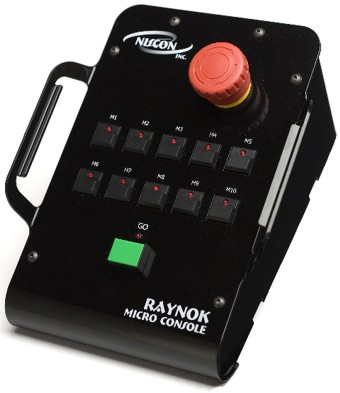
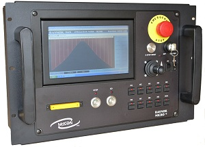
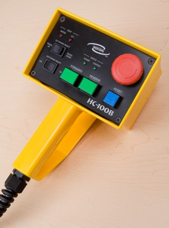

Operator Interfaces
Raynok MK1 Console
Compact. Ergonomic. Powerful
If your installation calls for a feature packed system on a responsible budget, then look no further than the MK1 Console from Niscon Inc.
This compact, sleek, sophisticated yet simple operator console runs the same powerful software as its larger counterparts. It fits in tight spaces, mounts in equipment racks, on walls or stows neatly in a flight case ready for the road.
Designed with applications such as school auditoriums, houses of worship and concert stages in mind this mighty little console does it all.
Features
- Full Emergency Stop control
- Compact and portable
- Jog any machine in the system
- 10 programmable macro buttons
- I/O status monitoring and reporting
- Low power processor with Solid State Hard Drive
- Optional Features include: Joystick, HTR (Hold-To-Run) and backup computer system
Raynok MK2 Console
Full Featured. Ergonomic. Powerful
Give your Automation Operator all the tools they need for a successful performance. Give them the Raynok MK2 Console.
The elegant design and simplicity of the MK2 Console puts the power and control of all motion functions at your fingertips. Operators can call and recall functions and cues with the press of a single button. Programmable Macro buttons allow the operator to customize their desktop to not only save time but improve efficiency and safety.
The MK2 runs the same intuitive and reliable Raynok Software that our operators have come to appreciate, in a compact and feature rich package.
Features
- MS WindowsTM Operating System
- Dual processors with live backup
- Solid state hard drives
- Redundant power supplies
- Built in pointing device with dual 3-button operation
- 24” TFT HDMI monitor for crisp clean image (Dual monitor capability)
- Full function keyboard
- USB ports for peripherals
- Numeric keypad with direct call function buttons for quick data entry
- Multi-function numeric keypad
- Fully Integrated Emergency Stop System Control
- 24 user programmable macro buttons
- All button presses monitored and archived
- Encoder wheel for speed scaling of axes in motion
- Onboard joystick for jogging
- Multiple network ports
- 2 x 18” LittleliteTM 3-pin XLR task lamps
- WYSIWYG on board
- Remote Stage Manager's monitor
- R3D software installed
Raynok Micro Console
Small. Ergonomic. Powerful
With Raynok software installed on your laptop, the Raynok Micro Control is perfect for managing chain hoist applications in conjunction with our CH-800 Hoist Controllers.
The Micro Console is also perfect for our production customers that need a testing rig in their scenery shop. With the Micro by your side during shop testing you’ll always have the comfort of knowing your ready.
Features
- GO button as a HTR (Hold-To-Run)
- Emergency Stop Button
- Raynok Software link feature: Prevents the Raynok Software from sending a GO command unless the Micro is connected to the system
- 10 full feature Macro buttons
Raynok Micro+ Console
Smaller. Ergonomic. Powerful
Info to come.
Features
Raynok Runabout Control - On Stage
 When a small production requires the ability to control a small number of motors or a concert hall wants a simple solution for chain motor or banner controls, Niscon Inc. provides the venue with a Raynok Touch or a Raynok Runabout Touch.
When a small production requires the ability to control a small number of motors or a concert hall wants a simple solution for chain motor or banner controls, Niscon Inc. provides the venue with a Raynok Touch or a Raynok Runabout Touch.
Raynok Touch and Runabout are perfect solutions for smaller cultural venues, ice rinks and shows with simple or remote motion control requirements.
Raynok Touch
The Touch is a 19” rackmount controller that can control up to four machines with the standard software in its stand alone configuration. Custom configurations and screens allow this versatile device to control multiple axes, create groups in a simple and intuitive manner.
Niscon Inc. can create a custom application for your installation and give your customer the “fun factor” to set the installation apart from the competition while providing safe, reliable motion control.
Raynok Runabout
The Runabout is a handheld device that has all the same abilities as its rackmounted partner but with the added ability to be fully mobile. With the Runabout the operator can remotely control any Raynok console to send jog commands, playback and create cues and confirm axis status.
Features of the Raynok Touch/Runabout Systems:
- 4” x 5” resistive touch screen
- Fully integrated into the Emergency Stop System
- Password protection
- Software setup and cueing utility
- Wireless option
- A Runabout Touch Package includes; the device, 50’ cable and the software utility
- A Touch System Package includes; the device, a built in E-Stop Master and the software utility
HC100
The Raynok HC-100B commissioning pendant provides operators with a simple local control for commissioning, service or maintenance and plugs directly into the SN101 interface card or RTDM variable speed drive.
The main function of this control pendant is for maintenance as it allows you to control you variable speed machinery with being overseen by the Raynok software.
Designed with applications such as school auditoriums, houses of worship and concert stages in mind this mighty little console does it all.
Main Functions:
- Bypass overtravel limits for setting and test
- Run equipment in both directions
- Axis reset button
- Emergency stop button
HCI Pendants
Networked control for hoist systems.
 Whether your needs are simple control of chain hoists, banners or run-to-limit hoists there is a Raynok HCI pendant suited to your application.
Whether your needs are simple control of chain hoists, banners or run-to-limit hoists there is a Raynok HCI pendant suited to your application.
The HCI series pendants are well suited for any application that requires centralized control of decentralized controllers.